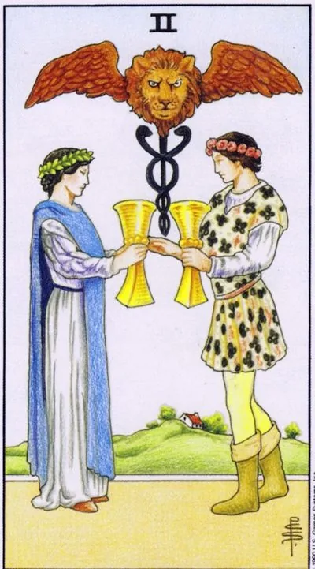

Minor Arcana · Cups
IITwo of Cups
Two hearts agree: mutual sympathy, the union of equals, harmony in a pair or a working tandem.
Archetype and core meaning
A young man and a girl exchange cups; above them a Hermes caduceus and a winged lion. Every detail of Waite's drawing says one thing: the meeting of two equals heals and transforms, "I" and "you" add up to a stable "we."
Traditionally, the card means mutual sympathy and a contract of hearts: attraction, engagement, peace after a quarrel. Its language is broader than romance - any partnership where the exchange is equivalent: tandem, co-authorship, a union of like-minded people. To the question "Is it possible to union?" The two cups answer "yes" if both are willing to give as much as they take.
Daily life
It's a good time for anything that's done by the two of you: dinner together, cleaning for two, a conversation that's been delayed for a long time, reconciliation is easy, household issues are solved in one sentence, if there was tension in the family, today it's enough to have a small gesture to meet.
Work and career
Tandem time: co-founding, strong lead-subject, bargaining that is both parties' best; the ideal time to offer or accept a partnership is trust high; projects with clear roles are surprisingly high; single-handed work is less productive.
Relationships
Reciprocity, engagement, wedding, second honeymoon, lonely people are going to meet with a tangible, almost physical attraction, where both read each other's thoughts, and the relationship is going to be a conscious choice: we're together, and it's a decision, not a habit.
Health
The body recovers when there is support: treatment is easier in a couple or group; harmonious intimate life directly affects tone and sleep; couples practices are favorable - yoga, massage, dancing: the psyche calms down where the whole is taken.
Spiritual meaning
Alchemical marriage: the combination of opposites into a larger whole. The caduceus on the card is the sign of Hermes, the patron saint of healing, so the card is used in rituals of reconciliation and bonding. Lesson: the magic of a relationship begins where both look at each other, not at profit.
The exchange has broken down: an imbalance of “give more than I get,” strained relationships, brewing rupture.
Archetype and core meaning
The cups don't come together: each holds his higher, and the exchange stops. The winged lion loses power where equality has disappeared, instead of union, there is a deal with unilateral advantage.
The card indicates imbalance, tension, trust abuse, sometimes it's just fatigue and accumulated petty grievances, sometimes it's a symptom of a deep mismatch, where "we" exists by inertia, and in any case, an honest renegotiation of the terms of the union is required.
Daily life
Domestic rift: arguing about sharing responsibilities, feeling like you're not being heard, talking over the lip. Don't audit your claims at the peak of your anger, pick a quiet hour. Often, your partner just doesn't know you're feeling unequal.
Work and career
Partnerships are cracking: deposits are becoming unequal, promises are being fulfilled upside down, decisions are being made behind your back; check the documentary side of agreements; don't rely on verbal assurances; if you're tandem, redistribute responsibility.
Relationships
Cooling: quarrels go round and round, jealousy and power struggles grow, intimacy has been replaced by a formal "normal" card that doesn't always mean a breakup, but always requires an honest conversation - if it doesn't happen, the distance will keep growing.
Health
Conflict hits the nervous system and the heart: insomnia due to resentment, pressure surges, chest lumps; chronic tension in a pair reduces immunity faster than infection; pairing practices are useless until the conflict is resolved; start with individual stress relief.
Spiritual meaning
The broken alchemical union is a test of meaningful connections. In energy management, the card helps cut off inanimate attachments and complete outmoded contracts. The lesson is harsh: love lives where equality exists; where power rules, there is a deal.
🌿 How the school reads this rank
The main idea
The meeting of two emotional streams, the feeling becomes concrete because the other person comes along and the emotions begin to mix.
How it manifests
In work, it's mutual emotional support, in relationships, it's reciprocity, it's trust, it's in love, it's self-development, it's the ability to share joy with another person.
The shadow side
Emotions do not coincide: one loves, the other does not; one rejoices, the other experiences.
Keywords
trust · reciprocity · cocktail of emotions · joy · background
📜 In detail — from the rank lecture
Essence of the card
The separation and confusion of emotions; the smooth emotion of the ace is shared when a particular person appears, and the man and woman cuckle — "you connect the emotions ... you drink from the same jug," a shared emotion that is split in half.
Upright position
- Historically, the story is excavated: the chocanie comes from the ancient culture of poisons, where wine was poured from cup to cup or exchanged in cups, showing that you can not poison; hence drinking "on the brewdershaft." The key emotion is trust.
- Work/society: mutual emotional feeding – the boss rejoices at your results, “and you straighten your back and burn even more”; falls on the workers’ allies.
- Relationships: love “everyone” on an ace and at a distance (the object does not even know); in two, a person knows about your feelings and answers – “a cocktail of your emotions and his”, falling in love with reciprocity.
- Self-development: the joy is more pleasant than two – “ice cream is not good for one”, shared joy doubles.
Negative meaning
Emotions go into the negative - unrequited love ("you have one emotion, he has another"), refusal, mismatch of backgrounds: you mourn Belmondo, and next to rejoice in the victory of the football team; "nagging" colleague spoils the drink with "sour fruit".
School emphases and distinctive points
- Junior arcana are disassembled by fours; each next arcana “unfolds” the feeling of the elements.
- Author's historical excavations of images: the red cap of a sailor; chocanje and brewderscape from the poisons of antiquity; dark pitfalls of swords are painted intentionally - "if you look well at least 100 years ago."
- Didactic models: card of the day; ice cream as a model of a straight / inverted card; pentacle bicycle; lemniscata-uroboros; the second coin of any situation.
- Kabbalah/Sfirot does not use at all (“you need to be a little Jewish”), numerology is discarded; astrology is mentioned only as a help to read the client – there is no own astrological binding of doubles in the lecture.
- Practice of alignments: you can do it yourself, "if you do it well"; kickbacks are not mysticism, but immersion in the client's emotions (work with the investigators on hangings in Brest); reset rituals are individual - he was able to wash his hands / face. Cards do not get tired and do not lie - a person gets tired.
- Modern series and humor: pitching after the placer, exchange rates and real estate, Maybach vs. Zhiguly, "such things are pies", "elk on corn".
- Positioning: theory is freely available, practice is in small groups (~7 people, 40 two-hour lectures, course ~300 euros with an increase to ~400): “Practice is my personal experience, which I have the right to monetize.”
Keywords
trust; brewdershaft; cocktail of emotions; reciprocity; background mismatch.